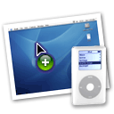

cheappod 1.0
cheappod allows you to download songs from your ipod back to a computer.

My computer caught on fire shortly after finishing this so I probably won't do much work on it until I fix my laptop or get a new computer that runs Mac OS X. In any case, I think it's complete feature-wise (hence the "1.0") and it's definitely usable. So... my loss is your gain!
Tip: drag songs out of cheappod's song list directly into your iTunes library. It works!
Download cheappod 1.0
source code
The source code is released under the GPL.
There's also something of a "standard-format software presentation webpage" when it comes to software intended for use on apple computers. (you can also call it the apple hipsters page)
iwick@ucsd.edu
http://microarrays.ucsd.edu/~ivan/